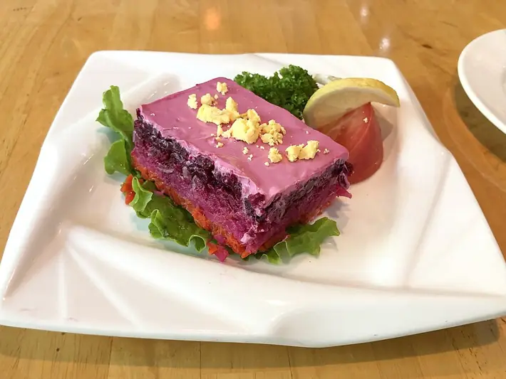

Фото: N509FZ, CC BY-SA 4.0
.jpg){kind=link}
Селёдка под шубой
Слоёный салат из сельди, варёных овощей и майонеза, главный салат новогоднего стола
100 мин6 порц.437 ккал на порциюБ 16 · Ж 32 · У 21Русская кухня
Продукты на 6 порц.
- Сельдь солёная2 филе
- Картофель3 шт
- Морковь2 шт
- Свёкла2 шт
- Яйцо куриное2 шт
- Лук репчатый1 шт
- Майонез200 г
- Соль1 щеп.
- Вода3000 мл
Как готовить
- Свёклу вымойте и варите в кожуре на среднем огне 60-80 минут, пока нож не войдёт легко. Картофель и морковь в кожуре варите отдельно 20-25 минут. Яйца варите 10 минут после закипания.
- Овощи и яйца остудите полностью, 30 минут, затем очистите.
- Сельдь очистите от костей и нарежьте кубиком 0,5-1 см. Лук мелко порежьте.
- Картофель, морковь, свёклу и яйца натрите на крупной тёрке, каждый продукт в отдельную миску.
- Выкладывайте слоями на плоское блюдо: картофель, сельдь с луком, морковь, яйцо, свёкла. Каждый слой слегка посолите (кроме сельди) и смажьте тонкой сеткой майонеза.
- Верх из свёклы промажьте майонезом полностью и разровняйте.
- Уберите салат в холодильник минимум на 2 часа, лучше на ночь, чтобы слои пропитались.
Совет. Овощи для шубы лучше запечь в фольге при 200 °C (сильный жар) вместо варки: они не будут водянистыми и салат не потечёт.